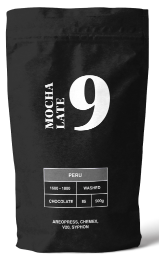
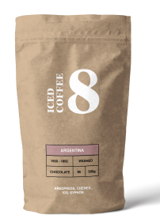
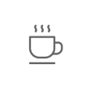

Mocha Late
Coffee is a brewed drink prepared from roasted coffee beans, the seeds of berries from certain Coffea species.
1 Bag $69.99

Iced Coffee
Coffee is a brewed drink prepared from roasted coffee beans, the seeds of berries from certain Coffea species.

Caramel Frappe
Coffee is a brewed drink prepared from roasted coffee beans, the seeds of berries from certain Coffea species.

Mocha Late
Coffee is a brewed drink prepared from roasted coffee beans, the seeds of berries from certain Coffea species.

View More